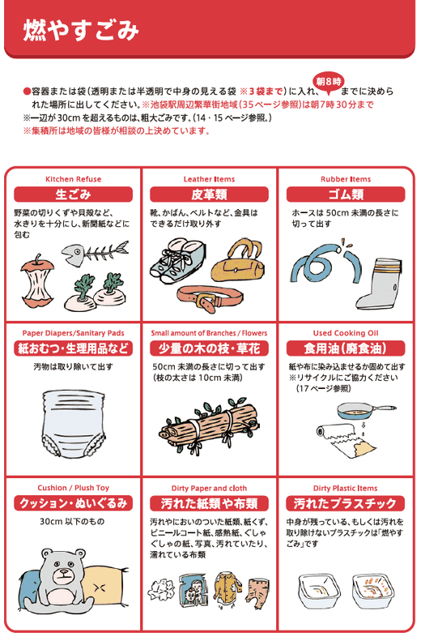

ランドセルの捨て方
燃やすごみ
出す日
燃やすごみを出す曜日は、地域ごとに違います。町名を選ぶと、収集する曜日がわかります。
収集日の朝 8:00 まで(池袋駅周辺の繁華街エリアは朝 7:30 まで)に出してください。
燃やすごみの分け方・出し方(区の資料)

燃やすごみを出す曜日は、地域ごとに違います。町名を選ぶと、収集する曜日がわかります。
収集日の朝 8:00 まで(池袋駅周辺の繁華街エリアは朝 7:30 まで)に出してください。
